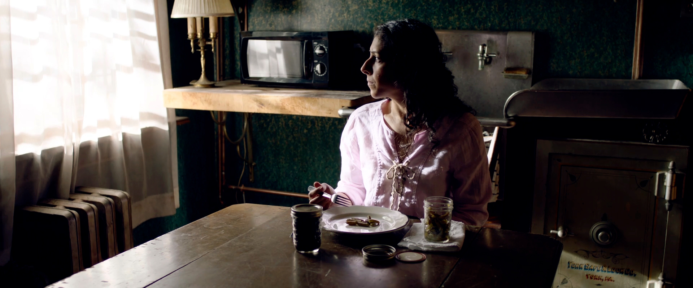
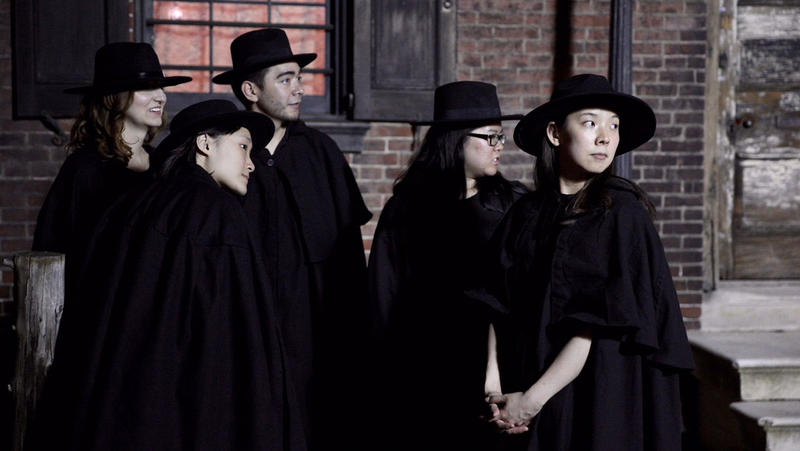
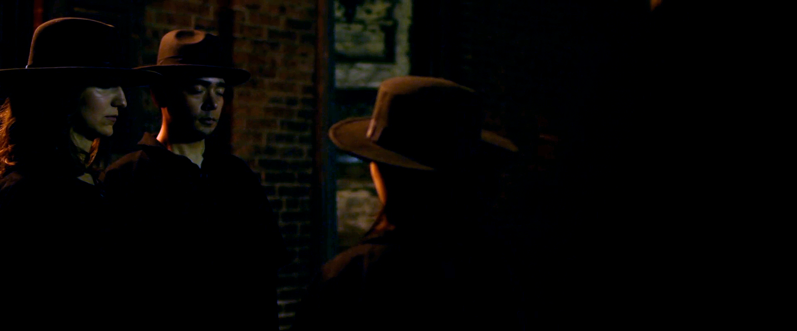
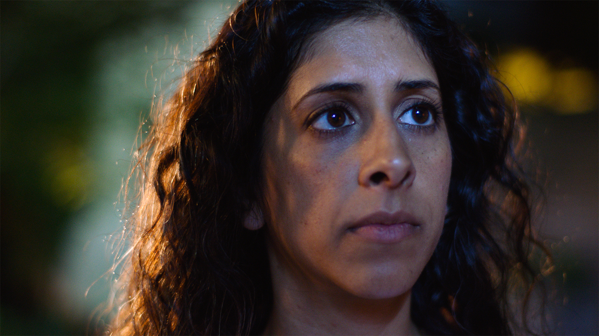

Three Seasons
- Written, directed and co-produced by: Althea Rao
- Cast: Vanita Kalra, Guillermo Alonso
- Executive Producers: Dirk Wiggins, Yun Bai, Ping Zhang
- Producers: Althea Rao, Shane D. Scott, Maxwell DiPaolo
- Line Producer: Eve C. Siconolfi
- Assistant Director: Samantha Heth, Chen Hsin-Yu
- Director of Photography: Adam Diller
- Assistant Camera: Quynh Le, Luc Ung, Norman Wicaksono
- Grip: Stacey Furrybear, Vito Scutti, Will Colacito
- Location Sound: Sam Morris
- Production Design: Enrica Ferrero, Gabrielle Constantine
- Costume Designer: Wang Liudi, Julia Haines
- DIT: Bobby Howley
- Editor: Brian Nappi
- Post Sound Design: Eric Carbonara / Nada Sound Studio
- VFX: David Kessler
- Colorist: Adam Diller
- Music: Meng Qi
- Still Photography: Joseph Labolito
- Fiscally sponsored by From the Heart Productions
- Kickstarter Project
- Recipient of Temple University MFA Completion Grant
Inspired by a Confucius tale, Three Seasons is a short narrative film about an awkward family reunion. In the frozen season of Cloudville, half-frozen Elliot welcomes a visit from his estranged Piyan cousin Freya who is also his foster sister. The two biologically related young adults struggles to connect as kins, but their cultural difference and complicated family past from the parents’ generation never ceased to shadow their mind, making it harder for them to form an emotional tie. As they move forward, they question and recognize the essence of kinship and family.
{kind=link}

{kind=link}

{kind=link}

{kind=link}
